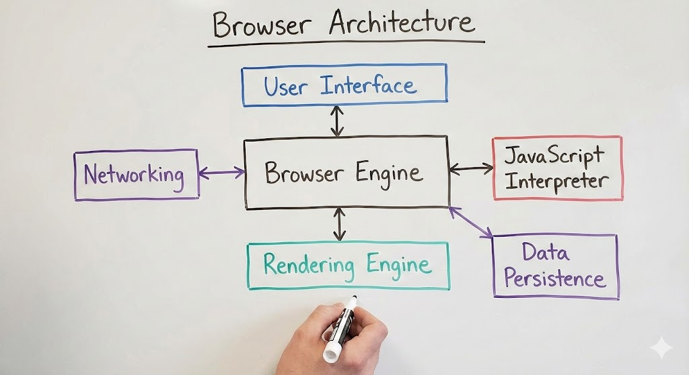

DECEMBER 3, 2025 — The web platform has achieved a significant aesthetic victory this quarter. The View Transitions API is now fully supported across all major engines, allowing for app-like morphing animations between page loads without the need for Single Page Application (SPA) architecture. This marks the end of the "white flash" era of the internet, a development celebrated by UX designers globally.
However, the landscape is not entirely optimistic. The industry is currently grappling with the chaotic deprecation of third-party cookies. While the "Privacy Sandbox" was intended to be the successor, implementation delays and regulatory pushback have left advertisers and developers in a state of limbo. Many sites are reporting broken authentication flows as a collateral result of these privacy enforcement updates.
Furthermore, "Framework Fatigue" has returned as a primary complaint in the 2025 Developer Survey. With the rise of "Resumability" frameworks challenging the React hegemony, engineering teams are facing difficult decisions regarding technical debt and migration paths. The dream of a unified web standard remains elusive as tooling fragmentation hits an all-time high.